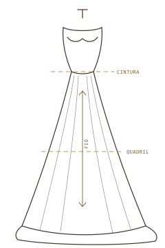
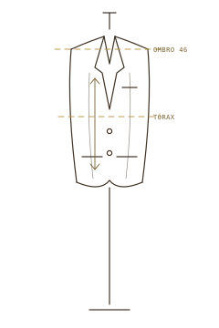

Alinhavo é o ponto provisório que segura o tecido antes da costura definitiva. Na prova, ele ainda pode ser desfeito e refeito. O sistema leva essa ideia para a tela: a interface prova, ajusta e só então arremata.
Princípio 01
Prova antes de pronto
Mostre o processo antes do resultado. A cliente compra confiança no caminho, não só a peça final. Cada página diz o que acontece a seguir.
“Três provas: o molde em morim, o tecido alinhavado e a final, com os sapatos do dia.”
“Seu vestido dos sonhos, pronto em poucas semanas!”
Princípio 02
A mão aparece
Nomeie o gesto, o material e o tempo. Um número concreto vale mais que um adjetivo. As anotações em mono são a letra da costureira no molde.
“Cerca de 40 horas de bordado por corpete.”
“Acabamento impecável de altíssima qualidade.”
Princípio 03
Silêncio de ateliê
Espaço em branco é tempo de respiro. Sem urgência, sem exclamação, sem caixa-alta gritada. Quem está escolhendo a roupa de um casamento já tem ansiedade suficiente.
“A agenda de março tem provas às quintas e aos sábados.”
“ÚLTIMAS VAGAS!!! Garanta já a sua data!”
Princípio 04
Dois tecidos, um ofício
Noivas e madrinhas (registro Seda), noivos e padrinhos (registro Casimira) recebem a mesma voz e o mesmo cuidado. Muda o tecido, não o tom. A linguagem padrão é neutra: “quem vai casar”, “para quem é a peça”.
“Para quem é a peça? Noiva · Madrinha · Noivo · Padrinho · Outra ocasião”
“Encontre o vestido perfeito. (Noivos, cliquem aqui.)”
Princípio 05
Cada ponto tem função
Movimento só onde algo se une (linha que se desenha), cai (tecido revelado) ou se ajusta (assentamento final da curva). Se uma animação não conta uma dessas três coisas, ela sai.
A costura se desenha entre o título e a imagem: une as duas ideias.
Ícones girando sem parar para “chamar atenção”.
Tom de voz · vocabulário
Usamos
Por quê
prova, molde, caimento, barra, arremate
Vocabulário do ofício, explicado na primeira vez que aparece.
você, verbos no presente
Proximidade de quem está com a fita métrica na mão.
ponto de partida (não “modelo”)
Nada é fechado: tudo é cortado no corpo.
números concretos
“6 a 8 meses”, “3 provas”, “40 horas”.
Evitamos
Em vez disso
“vestido dos sonhos”, “princesa”
“a peça que parece sua”
“o dia mais feliz da sua vida”
“o dia que não se repete”
“perfeito”, “impecável”
o gesto: “barra feita à mão”
“!”, CAIXA-ALTA, urgência
ponto final. Calma.
02
Cores
Oito cores: dois cremes de fundo, um rosé de detalhe, três dourados (brilho, marca e traços) e dois tons escuros (bronze e café). Os dourados e o rosé trazem calor e festa, mas nunca carregam texto sobre fundo claro (todos abaixo de 3:1). O texto fica com o café e o bronze. Clique numa amostra para copiar o HEX.
Fundos e detalhe
Creme marfim--at-color-marfim · #FDF7E7
Fundo da página. Também o texto sobre café.
Creme manteiga--at-color-manteiga · #F9F1D8
Fundo 2: seções alternadas, cards, formulário, rodapé, hover de superfície.
Rosé blush--at-color-rose · #F3DFD2
Detalhe: passe-partout de imagem, porta Noivas & madrinhas, realces suaves. Nunca em área grande de texto longo.
Dourados · marca, brilho e traços (decorativos)
Dourado principal--at-color-dourado · #B99847
Marca: monograma, costuras desenhadas, fita de progresso, item ativo, hover do botão primário (com texto café).
Café sobre ele 4.54 · AASobre marfim 2.57 · não é texto
Dourado claro--at-color-dourado-claro · #C6AF6C
Brilho: reflexos, hover sobre café. Sobre café vira texto secundário, link e foco.
Sobre café 5.79 · AASobre marfim 2.01 · não
Dourado antigo--at-color-dourado-antigo · #B19F6E
Traços: divisórias, linhas de construção, numeração decorativa.
Sobre marfim 2.44 · nunca texto
Tons escuros · texto (contraste sobre creme marfim)
Café--at-color-cafe · #3D3226
Texto principal, botão primário, ícones e fundo do registro Casimira (alfaiataria).
11.67 · AAAManteiga 11.05Rosé 9.69
Bronze--at-color-bronze · #7A6230
Texto secundário, links, anel de foco, borda de campo, sucesso (com ícone).
5.43 · AAManteiga 5.14Rosé 4.51
Erro (funcional)--at-color-erro · #9A3B2E
Fora da paleta de marca: nenhuma das 8 cores sinaliza erro com contraste. Só em mensagens de erro, sempre com ícone.
6.46 · AA
Registro Casimira · sobre café
Marfim sobre cafétexto principal
11.67
Dourado claro sobre cafésecundário, link, foco
5.79
Dourado sobre cafécosturas, detalhes
4.54
Estados interativos
PadrãoAgendar
Hover · dourado caiAgendar
Foco · anel bronze 2px +3pxAgendar
Pressionado · 0.98Agendar
Desabilitado · 42%Agendar
ErroInclua o DDD.
03
Tipografia
Display · Fraunces (variável)
Caimento e corte
Serifa de alto contraste com eixo SOFT: as mesmas letras ficam macias como seda (SOFT 100) ou secas como lã de alfaiataria (SOFT 0). Um só tipo atende os dois registros sem trocar de família. O itálico com WONK é usado como o “ponto à mão”: uma palavra emocional por frase.
Texto · Instrument Sans (variável)
Aa Rr
Grotesca de desenho calmo, com eixo de largura (wdth 75–100). Larga no corpo de texto para leitura; estreita (80%) e espaçada em caixa-alta nos rótulos, como as marcações impressas de uma fita métrica.
Anotação · IBM Plex Mono
68 cm
A letra da costureira no molde: medidas, códigos de peça, contadores. Sempre em 11px, caixa-alta, números tabulares. Nunca em parágrafos.
Escala (fluida, mobile → 1440)
Display XL
Fraunces 300 · lh .92 · −0.022em
A prova
52 → 147 · máx 168
Display L
Fraunces 300 · lh .92
Noivas & madrinhas
44 → 105 · máx 108
H1
Fraunces 350 · lh 1.04
Quatro encontros, uma peça.
36 → 72
H2
Fraunces 350 · lh 1.04
Escolha pela silhueta.
30 → 52
H3
Fraunces 400 · lh 1.25
Molde em morim
24 → 36
H4 · card
Fraunces 400 · lh 1.25
Evasê em crepe de seda
20 → 24
Lead
Fraunces 300 · lh 1.4
Cortados e ajustados no seu corpo, prova a prova.
20 → 28
Body L / Body / S
Instrument Sans 400 · lh 1.62
A primeira conversa dura cerca de uma hora e não tem custo.
18 · 16 · 14
Label
Instrument 600 · wdth 80 · +0.16em
Atelier de trajes festivos
12
Botão
Instrument 600 · wdth 85 · +0.12em
Agendar prova
13
Anotação
Plex Mono 400 · +0.04em
Peça 07 · crepe de seda · 3 provas
11
Regras de uso
Uma só palavra em itálico por título: a emocional (“começa”, “uma peça”). Nunca a frase inteira, nunca em texto corrido.
Títulos em caixa normal, sem caixa-alta. A caixa-alta é exclusiva dos rótulos e botões (Instrument, estreita e espaçada).
Texto corrido até 62 caracteres por linha (--at-measure); leads até 38ch.
Fraunces abaixo de 20px só em H4/cards. Abaixo disso, Instrument Sans.
SOFT 100 no registro Seda, SOFT 0 no registro Casimira, automático via [data-registro].
04
Grid, layout e espaço
A base é 4px, o “ponto”. A escala cresce como uma costura: pontos curtos para o detalhe, pontos longos (alinhavo) para separar peças. Entre seções, o respiro é grande (96 → 224px) e herdado da calma editorial.
1
2
3
4
5
6
7
8
9
10
11
12
Redimensione: 4 colunas (base) · 8 (≥768) · 12 (≥1024). As colunas extras quebram para a linha seguinte em telas menores.
Breakpoint
Colunas
Gutter
Margem
base · 0
4
16
20
sm · 480
4
16
20
md · 768
8
20
32
lg · 1024
12
24
48
xl · 1440
12
24
64
máx
conteúdo até 1600px, centrado
space-14
space-28
space-312
space-416
space-524
space-632
space-748
space-864
space-996
space-10128
space-11192
section-y96–224
Forma
corte · 0Imagens, cards, botões
campo · 2pxDatas, palco técnico
botão · 999pxSó o botão de costura e etiquetas
Tecido é cortado, não arredondado. O círculo aparece apenas onde o objeto real é redondo: botão, cabeça de alfinete, etiqueta.
05
Texturas, costuras e imagem
Ponto corrido
6 · 5 · divisórias
Alinhavo
14 · 8 · dourado · linhas de movimento
Pesponto
3 · 3 · campos, botão secundário
Pique
entalhe de molde · eyebrows
área de corte
Marcas de corte
hover de card, destaque
Tule
rede hexagonal 9% · registro Seda
Risca de giz
1px a cada 28px · registro Casimira
Papel milimetrado
24px · giz 7% · vista do molde
Overlock
zigue-zague · borda do rodapé
fio
Fio do tecido
indicador de rolagem
Fotografia e tratamento de imagem
Assim
Luz natural lateral, da janela do atelier. Sombra macia que mostra o volume do tecido.
Fundo de morim, papel de molde ou parede crua. A peça é a única cor forte do quadro.
Três planos por peça: inteira (manequim ou corpo), detalhe macro (bordado, casa de botão, barra) e mãos trabalhando.
Noivos e noivas na mesma luz e no mesmo enquadramento. Muda o tecido, não a direção de arte.
Grading: sombras levemente erguidas, saturação −10, temperatura neutra a quente. Sem filtros de “vintage”.
Casal ao pôr do sol, bokeh dourado, véu ao vento: é a foto do fotógrafo de casamento, não do atelier.
Fundo infinito branco de e-commerce.
Corações, alianças, flores digitais sobrepostas.
Rosto em primeiro plano tirando atenção do caimento.

Placeholder · Seda

Placeholder · Casimira
Enquanto não há fotos, o sistema usa croquis em linha com linhas de construção (dourado) e fio do tecido (bronze): o “molde” da imagem que virá.
06
Ícones
24 × 24, traço de 1.25px (a espessura de uma linha de costura vista de perto), cantos vivos, sem preenchimento. Os ícones de ofício (agulha, alfinete, carretel, botão) carregam um trecho em pesponto. A cor é sempre currentColor.
Monograma · botão pregado
O monograma é um botão de quatro furos pregado com linha dourada em X: o primeiro ponto que prende uma peça ao corpo de quem a veste. Gira 90° no hover, como o botão passando pela casa.
07
Motion
Três gestos guiam todo o movimento: a linha que costura (desenho de traço), o tecido que cai (revelação de cima para baixo, rápida no início, assentando devagar) e o ajuste (o pequeno assentamento final da curva). Use o alternador no topo para ver o fallback de movimento reduzido.
Wipes, menu, transição de página. Tule sendo puxado.
Cortecubic-bezier(.5, 0, .1, 1)
Registro Casimira. A tesoura de alfaiate: decidida, sem sobra.
Linhacubic-bezier(.45, .05, .25, 1)
Traços e costuras. Ritmo de máquina, pontas suaves.
Saídacubic-bezier(.55, 0, 1, .45)
Saídas, sempre a 60% da duração da entrada.
Balançolinear(…) · mola leve
Cabide que balança, botão que gira. Só em objetos pequenos.
Atrasos e coreografia
Token
Valor
Uso
stagger-letra
18ms
rolagem de letras em botões
stagger-linha
80ms
linhas de texto (60ms em Casimira)
stagger-peca
120ms
cards numa mesma fileira (máx. 6)
delay-respiro
200ms
intervalo entre camadas da hierarquia
exit-ratio
0.6
saída = 60% da entrada
casimira
×0.85
caimento 680ms, curva corte
Hierarquia do tecido: 1) fundo e imagem (tule/queda) → 2) título, linha a linha → 3) costura que liga as partes → 4) corpo e CTA. Cada camada começa ~200ms após a anterior.
No máximo três coisas em movimento ao mesmo tempo por viewport. Se houver mais, agrupe.
Stagger para no 6º item: a partir daí os itens entram juntos com o 6º (a sequência perde sentido e só atrasa a leitura).
Só uma peça grande ligada à rolagem por tela (paralaxe, arara ou manequim). Nunca duas.
Entrada uma vez só. Revelações não se repetem ao rolar para cima: o tecido não cai duas vezes.
Interação responde em ≤ 120ms (cor, escala de toque). O ornamento pode vir depois.
Partitura da entrada do hero (ms)
Cortina de tule
Imagem assenta
Título · 3 linhas
Eyebrow
Lead
Costura
CTAs
05001000150020002500
Catálogo · entrada
Cortamos o molde no seu corpo, alinhavamos e provamos.
Revelação de linhas
Cada linha sobe de trás de uma máscara, como a bainha sendo virada. Títulos, leads e citações.
A imagem se desenrola de cima para baixo, levemente alongada (scaleY 1.08), e assenta. Portas de coleção, imagens secundárias.
dados
data-reveal="queda"
motion
clip-path inset(0 0 100% 0) → 0 · cortina 1200ms
reduzido
fade 200ms
Corte
Wipe reto da esquerda para a direita, curva “corte”. É a queda de tecido traduzida para a alfaiataria: mesma função, gesto mais seco.
dados
data-reveal="corte" em [data-registro="casimira"]
motion
clip-path inset(0 100% 0 0) → 0 · corte 680ms
Alinhavo (costura desenhada)
A linha tracejada é revelada por uma máscara que percorre o traço. Os pontos não “nascem” um a um: a agulha passa. Liga título e imagem, separa seções.
A seção fica fixa (360vh) enquanto a rolagem “passa a peça no manequim”: cada passo acende um ponto de ajuste com sua linha de chamada. A linha tracejada é desenhada proporcionalmente à rolagem. Veja ao vivo no Overview, seção 02.
scrub direto (sem easing), passo = ⌊progresso × 4⌋
reduzido
sem fixação; todos os passos e marcas visíveis
fio do tecido
Fita métrica, fio do tecido, paralaxe
Fita métrica: progresso de leitura em dourado com marcações de centímetro, sob o header. Fio do tecido: seta dupla vertical com um pulso descendo, indica “role”. Paralaxe: imagem desliza a 8–12% da rolagem dentro da moldura, como a peça balançando no manequim.
dados
.at-fita · .at-grain · [data-parallax="0.1"]
reduzido
fita fica (é informação); pulso e paralaxe param
Arara (balanço do cabide)
Galeria horizontal. Arraste ou role para o lado: as peças balançam no gancho proporcionalmente à velocidade, com mola amortecida. No desktop do Overview, a arara é fixada e a rolagem vertical vira horizontal.
dados
.at-arara[data-pin] .at-arara__item
motion
rotate ≤ 5° · mola k .12, atrito .8 · origem no gancho
reduzido
scroll-snap nativo, sem balanço, sem fixação
Catálogo · hover, cursor, página e loading
Mova o cursor aqui: a agulha puxa a linha.
Cursor agulha + linha
O cursor do sistema permanece; um ponto (agulha) e um anel seguem com atraso. Em links o anel cresce; em cards vira etiqueta (“Ver peça”). Em zonas de hero, uma linha tracejada dourada é puxada atrás do cursor.
Primário: o dourado cai de cima (clip), as letras rolam, o botão de costura gira 90°. Pesponto: a borda tracejada corre como a máquina costurando. Linha: o sublinhado vira pesponto em movimento e a seta avança 4px.
motion
fill cortina 480ms · letras linha 480ms / 18ms · botão balanço
A imagem se alonga a partir do ombro (scale 1.02 × 1.045, origem no topo), como tecido pendurado. A vista do molde desce como uma saia sendo solta (clip elíptico). As marcas de corte aparecem.
Cobre a tela com morim (cai de cima), desenha a costura no centro e levanta revelando a página nova.
Transição de página · cortina
Links com data-transition. A cortina desce em 720ms (cortina), a linha de alinhavo atravessa, a navegação acontece, e na página nova a cortina sobe em 900ms antes da entrada do hero.
dados
a[data-transition] · .at-curtain
motion
clip inset(0 0 100% 0) → 0 → inset(0 0 100% 0)
reduzido
crossfade 160ms
Enfiando a agulha
Loading · enfiar a agulha
Só na primeira visita da sessão, e só enquanto as fontes carregam (mín. 1.4s, máx. 3s). A linha passa pelo buraco da agulha; o contador mede em centímetros.
dados
<html data-loader> · .at-curtain .at-loader
reduzido
200ms, linha já passada
Esqueleto · brilho de cetim
Enquanto imagens carregam, a luz atravessa o papel de molde na diagonal, devagar (2.4s), como o reflexo correndo num cetim.
dados
.at-skeleton
reduzido
estático
Movimento reduzido e performance
prefers-reduced-motion: reduce zera deslocamento, escala e stagger nos tokens. Tudo o que entra passa a entrar só em opacidade (200ms).
Nada em loop: pesponto, pulso do fio, brilho de cetim e carregamento param.
Fixo. Some ao rolar para baixo, volta ao subir. Depois de 24px ganha véu de tule (marfim 72% + blur) e uma costura na base. Sobre seções Casimira, inverte sozinho (data-theme="noite").
Clique em “Menu”: as duas linhas (uma em pesponto) se cruzam como alfinetes; o rótulo troca para “Fechar”. No Overview, o menu abre em tela cheia como uma cortina que cai, com os itens subindo em sequência; Esc fecha e o foco fica preso no menu.
10
Hero
A peça certacomeça naprimeira prova.
Cortados e ajustados no seu corpo, prova a prova.
Agendar provaVer coleções
.at-hero · título Display XL com linhas manuais (.at-line) · imagem com data-reveal="tule" + [data-parallax] · costura svg[data-stitch] ligando título e imagem · indicador .at-grain · [data-intro] espera o loader/cortina · [data-cursor-thread]
Mobile (base)
Título → imagem 4:5 em largura total → lead → CTAs empilhados. 100svh mínimo. Sem indicador de rolagem (o polegar já sabe).
Desktop (≥1024)
Título nas colunas 1–8 sobrepondo a imagem (8–12, 3:4). Lead e CTAs nas colunas 1–5, abaixo. Linha de alinhavo atravessa de um lado a outro.
11
Cards de coleção e peça
Card de peça
Imagem 3:4, etiqueta (tag), título em Fraunces, anotação em mono. Hover: caimento + vista do molde + marcas de corte.
A galeria é uma arara: uma barra fina no topo, cada peça pendurada por um gancho. Mobile: rolagem horizontal com scroll-snap e balanço. Desktop: seção fixada, a rolagem vertical move a arara (veja Motion › Arara e o Overview, seção 04). Contador “01 / 08” em mono. Navegável por teclado (a faixa recebe foco e rola com as setas).
Grade de coleção
2 colunas (base), 3 colunas (≥1024) com a coluna do meio deslocada 96px para baixo: o ritmo de peças penduradas em alturas diferentes. Filtros por silhueta em etiquetas; ao filtrar, as peças restantes deslizam para o novo lugar (FLIP, 800ms caimento).
Lightbox (recomendação)
Abre com a mesma cortina de tule (sobe), imagem em contain sobre morim, setas como botões redondos, Esc fecha, foco devolvido ao card. Arraste lateral no toque.
13
Agendamento de prova
Campos
Sem caixa: só uma linha em pesponto na base, que vira costura firme (bronze) ao focar. Rótulo sempre visível acima. Erro com ícone e frase que diz o que fazer.
Padrão · clique para ver o foco
Válido
Inclua o DDD para confirmarmos a prova.
Escolhas e datas
Rádios e checkboxes viram etiquetas de prova (44px). Selecionada: casimira com o ponto dourado. Dia lotado: riscado e desabilitado.
Fluxo em 4 etapas
Peça → O dia → Prova → Contato. Progresso como fita: etapas feitas em linha firme, a atual em alinhavo dourado. Validação por etapa, foco no primeiro erro, título da etapa recebe foco ao avançar. Confirmação desenha o nó de arremate.
01 · Peça
02 · O dia
03 · Prova
04 · Contato
Formulário completo e funcional no Overview, seção 06.
14
Depoimentos
Na terceira prova eu chorei. Não pelo vestido, mas porque ele finalmente parecia comigo.
Marina S.Noiva · abril de 2025 · 3 provas
Ajustaram o terno do meu avô para o meu corpo e trocaram só o que precisava.
Rafael T.Noivo · setembro de 2025 · ajuste
01 / 02
Citação em H2 Fraunces com aspa dourada · assinatura como etiqueta tecida (presa por dois pesponto laterais): nome, ocasião, data, nº de provas · troca manual (sem autoplay), linhas reveladas a cada troca, aria-live="polite"
15
FAQ
Em média, três: a do molde em morim, a do tecido alinhavado e a final, com os sapatos do dia.
Sim. Vestidos prontos, ternos de loja e peças de família.
Botão em H4 Fraunces · ícone: dois alfinetes que giram de + para × · painel por grid-template-rows 0fr → 1fr (480ms cortina) · costura dourada se desenha sob a pergunta · resposta entra em fade + 8px · painel fechado com inert
16
Rodapé
Borda superior em overlock · 4 colunas (≥1024) · assinatura em Fraunces SOFT 100 com letras subindo uma a uma (1200ms caimento, 40ms) · costura final se desenha · legal em mono